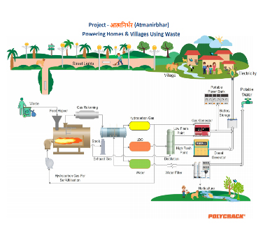

|
Convert your Waste to Energy using Polycrack® Technology
I’d like to discuss how all the waste generated by your company can be converted into power for internal consumption.
Polycrack® is the world’s first patented heterogeneous catalytic process for reforming contaminated, co-mingled plastic, rubber, organic and municipal waste, without the need for segregation or drying within 24 hours.

Polycrack® Worldwide Limited, through its Indian subsidiary, Enecovery Waste Solutions Pvt. Ltd, has delivered plants in India and USA. Soon plants in Jordan and New Zealand will come up. The first of many operational plants in India is with Indian Railways, processing Industrial waste at Railway workshop and Hindalco in Odisha.
Currently Polycrack® has introduced a product which is compact, affordable, Plug-N-Play system, with minimum site requirements, sustainable and can provide renewable green energy to more than 600,000 villages in rural India experiencing shortage of power and serious waste management problems for various reasons.
The innovation provides a unique, de-centralised, Waste-to-Energy solution, reducing the risk of air pollution and leakage of contaminants into the ground or water table. Waste generated is converted to valuable outputs, making them more self-reliant, generating power from their own waste and creating employment opportunities. Technology is scalable providing appropriate capacity plant as per requirement, enabling similar setups for temples and Gurudwara’s.
I know that our process will benefit your company waste disposal issues.
Are you available for a quick call this week?
If the above does not fall under your purview, would you mind pointing me towards the right person or suggest the best way I might get in touch with them.
Polycrack.com
|